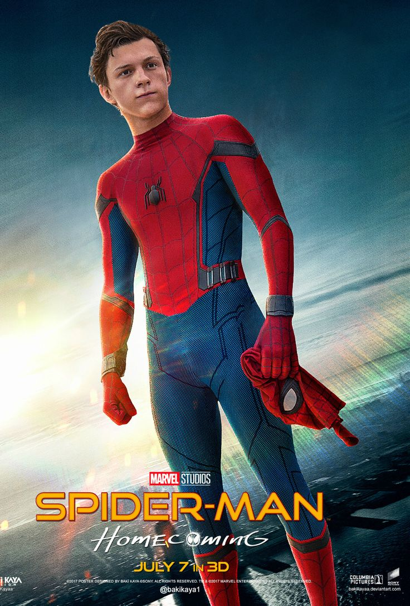
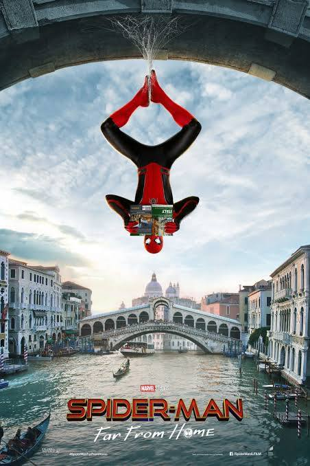

Spider-Man: Homecoming
Spider-Man: Homecoming (2017) follows Peter Parker as he navigates high school life while battling the Vulture. The movie showcases Peter's struggle to balance his life as a teenager and a superhero.
Spider-Man: Far From Home
Spider-Man: Far From Home (2019) takes Peter on a European trip where he faces Mysterio's deception. The movie explores Peter's grief over Tony Stark's death and his journey to becoming a more independent hero.
Spider-Man: No Way Home
Spider-Man: No Way Home (2021) brings back villains from past franchises, ultimately changing Peter’s life forever. The movie is a culmination of Peter's journey and sets the stage for his future in the MCU.
- Spider-Man: Homecoming (2017)
- Spider-Man: Far From Home (2019)
- Spider-Man: No Way Home (2021)
For more information, visit Marvel's official site or Spider-Man: No Way Home on IMDb.
 